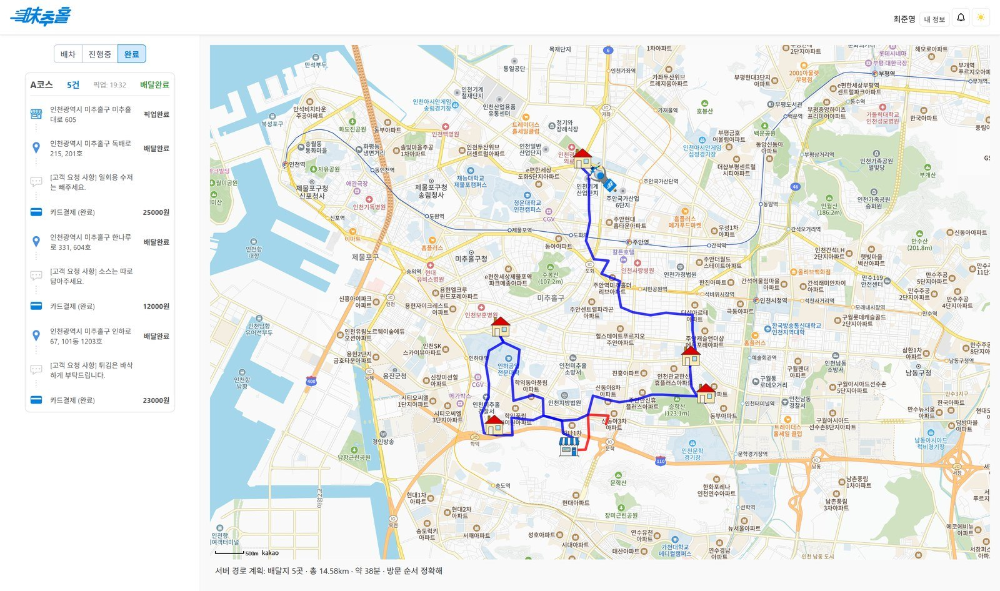
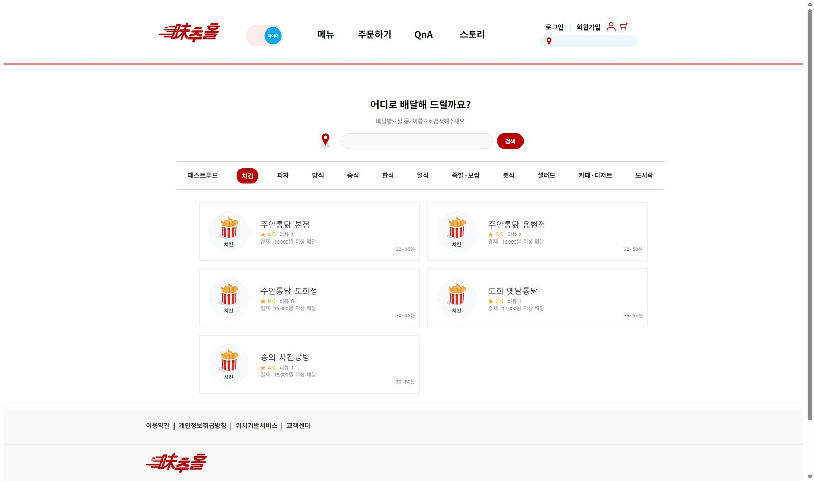
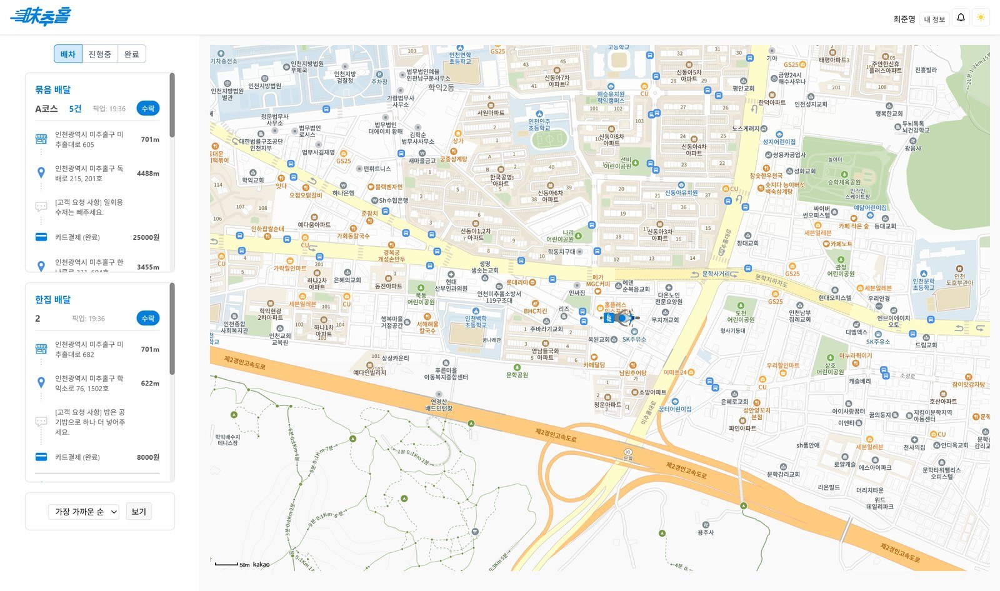
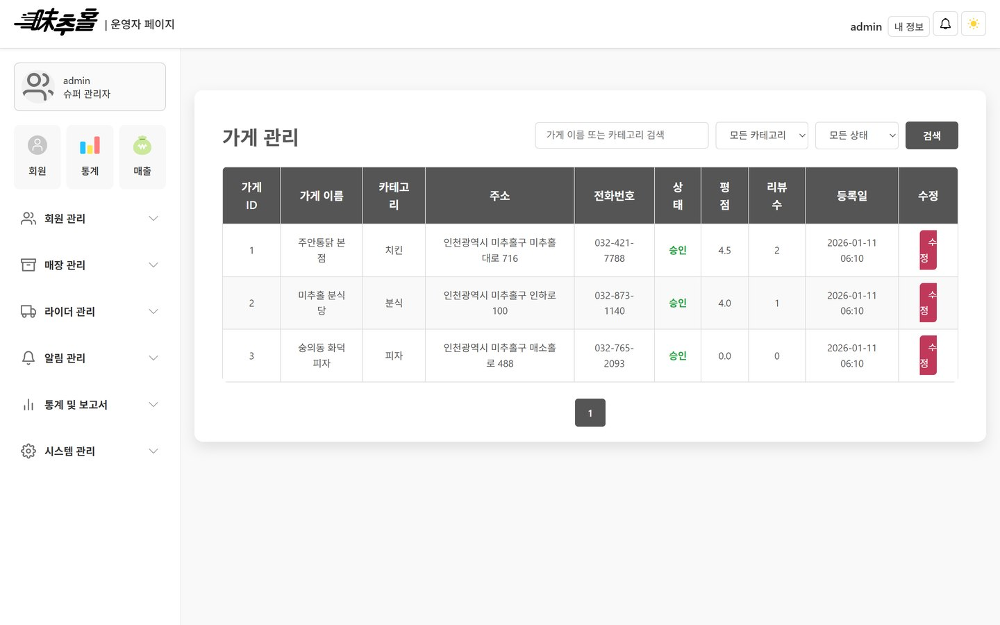

· 5인 팀 조장 · 백엔드
DeliveryPro
묶음배달 라이더의 방문 순서를 서버에서 계산하는 배달 플랫폼입니다.
- 기간
- 2025년 1월 – 2월
- 형태
- 5인 팀 조장으로 묶음배달 경로 계산과 서버 공통 규약, 소셜 로그인, 화면을 맡았습니다.
- 기술
- Java 21 · Spring Boot 3.4 · Spring MVC · Spring Data JPA · Spring Security · Thymeleaf · Oracle · H2 · Apache HttpClient · Kakao Map
- 자료
- GitHub 저장소 · 백엔드 PDF

개요
손님과 사장님, 라이더, 관리자를 잇는 배달 플랫폼
손님은 가게를 골라 주문하고, 사장님은 주문을 받아 메뉴를 관리합니다. 라이더는 배달을 맡고, 관리자는 회원과 가게, 라이더를 관리합니다. 이 네 역할을 한 서비스로 잇는 배달 플랫폼을 다섯 명이 만들었습니다.
조장인 저는 라이더 한 명이 여러 집을 도는 순서를 서버에서 계산하는 부분을 만들었습니다. 다섯 명이 짠 API가 같은 모양으로 응답하도록 공통 규약을 정했고, 소셜 로그인과 화면도 맡았습니다.
| 항목 | 값 | 설명 |
|---|---|---|
| 배달지 5곳을 도는 경로 | 14.58km | 데모용 격자 도로망에서 약 38분 걸리는 순서입니다. |
| 직선으로 208m인 두 집의 도로 거리 | 1,876m | 건널 수 없는 길을 우회한 거리입니다. |
묶음배달 경로 계산
어느 집부터 들를지는 서버가 정합니다
직선거리로 순서를 정하면 일방통행도, 건널 수 없는 길도 알 수 없습니다. 그래서 도로망을 방향 그래프로 만들고, 그 위에서 정차지끼리 걸리는 시간을 구한 뒤 순서를 정했습니다. 도로망은 일방통행과 건널 수 없는 길을 넣은 25×21 데모용 격자이고, 실제 지도는 아닙니다.
- 방향이 있는 도로망CSR graph교차로를 노드, 도로 구간을 간선으로 두고, 간선에는 거리 대신 도로 종류별 속도로 구한 소요 시간을 넣었습니다.
- 가까운 교차로에 붙이기snap · 400m배달지를 400m 격자 색인으로 가장 가까운 교차로에 붙이고, 1,500m 넘게 떨어지면 구역 밖으로 봅니다.
- 정차지마다 한 번Dijkstra정차지끼리 걸리는 시간표를 만듭니다. 다른 정차지를 모두 찾으면 탐색을 멈춥니다.
- 방문 순서Held-Karp12곳까지는 정확한 답을 구합니다. 그보다 많으면 최근접 이웃과 2-opt 근사로 바꾸고, 정확한 답인지 응답에 표시합니다.
- 순서와 경로를 한 번에계산한 순서는 DB에 저장하고 구간 좌표와 함께 돌려줍니다. 화면에 그린 경로와 저장된 순서가 어긋날 일이 없습니다.
- 같은 교차로에 붙은 두 집교차로까지 걸어가는 거리를 도보 속도로 바꿔 구간 양 끝에 더했습니다. 그래야 같은 교차로에 붙은 두 집 사이가 0초로 나오지 않습니다.
테스트로 고정
일방통행이 반영되는지 확인한 테스트
그래프 계산은 우회해야 하는 두 집으로 확인했습니다. 건널 수 없는 길 양쪽에 있어서, 직선으로는 가깝지만 도로로는 한참 돌아가야 하는 곳입니다. 같은 두 집이라도 가는 방향에 따라 시간이 달라야 일방통행이 비용에 들어갔다고 할 수 있습니다.
직선으로 재면
208m
두 집을 곧게 이은 거리입니다.
도로를 따라가면
1,876m
건널 수 없는 길을 피해 돌아가는 우회로입니다.
갈 때
247.7초
한쪽 방향으로 갈 때 걸리는 시간입니다.
올 때
97.6초
반대 방향은 두 배 넘게 빠릅니다.
이 값을 테스트의 기댓값으로 넣었습니다. 도로망 데이터가 바뀌면 이 테스트가 실패합니다. 방문 순서도 모든 순서를 다 따져 본 답과 같은지 테스트로 확인합니다.
서버 공통 규약
다섯 명이 만든 API의 응답 모양을 하나로 맞췄습니다
처음에는 API마다 응답 모양이 달랐고, 실패를 null이나 true/false로 알리는 곳도 있었습니다. 그래서 응답은 ApiResponse 하나로 감쌌습니다. 실패는 오류 코드 여덟 개와 BusinessException 하나로 알립니다.
| 상태 | 오류 코드 |
|---|---|
| 400 | BAD_REQUEST |
| 400 | VALIDATION_ERROR |
| 401 | UNAUTHORIZED |
| 403 | FORBIDDEN |
| 404 | NOT_FOUND |
| 405 | METHOD_NOT_ALLOWED |
| 409 | CONFLICT |
| 500 | INTERNAL_SERVER_ERROR |
- 기존 핸들러와의 충돌 방지이름이 같은 예전 핸들러가 남아 있어서, 새 핸들러는 이름을 따로 주고
@RestController에만 걸리도록 범위를 좁혔습니다. - 트랜잭션은 서비스에서트랜잭션 경계를 서비스 계층으로 옮기고 조회에는 readOnly를 붙였습니다. open-in-view도 껐습니다. 이제 지연 로딩이 화면 단계까지 새어 나가지 않습니다.
@RestControllerAdvice(name = "restGlobalExceptionHandler",
annotations = RestController.class)
public class GlobalExceptionHandler {
@ExceptionHandler(BusinessException.class)
... ApiResponse.fail(errorCode, ex.getMessage())
}로그인과 실행
소셜 로그인 3사 연동과 로컬 실행
- 소셜 로그인 3사Apache HttpClient네이버, 구글, 카카오의 인가 코드 교환과 프로필 조회를 직접 호출합니다. 카카오만 응답 구조가 달라 따로 읽고, 비밀번호는 BCrypt로 저장합니다.
- Oracle 없이도 실행h2 프로파일H2를 Oracle 호환 모드로 띄우고 데모 데이터를 넣습니다. 데모 데이터는 이 프로파일에서만 들어갑니다.
- 지도 키 없이 경로 표시SVG키가 없으면 서버가 계산한 경로를 SVG로 그립니다. 외부 키가 없어도 경로 계산 결과는 화면에서 보입니다.
./gradlew bootRun --args='--spring.profiles.active=h2'
Oracle과 외부 API 키 없이, H2 메모리 DB와 데모 데이터로 뜹니다서비스 화면
손님, 라이더, 관리자 화면



화면은 모두 데모 데이터로 띄웠습니다.